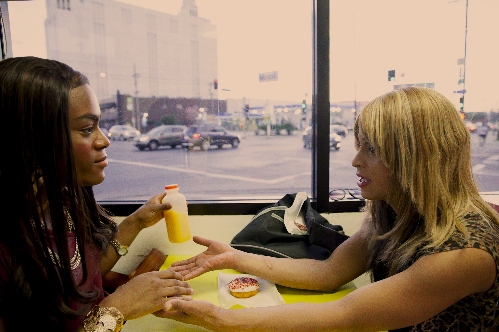
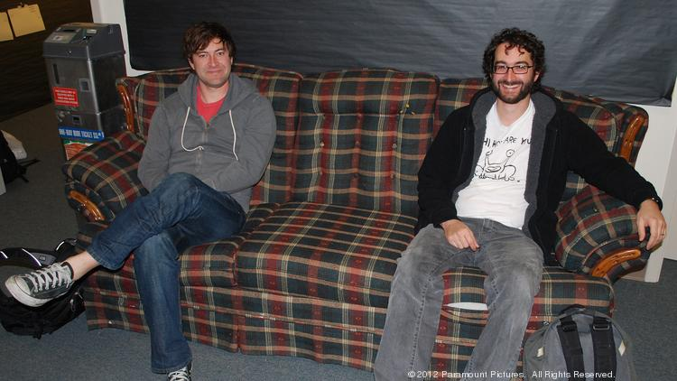

interview by Charlie Sextro on May 23, 2017
With so little time to work on your own creative endeavors, I’d like to hear about the decision to put so much time and energy into shepherding other creators’ projects.
The real honest answer to why I continue to do it today when, yes, time is limited? I don’t have enough time for my own creative work. I don’t have time for my kids. I don’t have enough time for my friends. I don’t have enough time to exercise. But I’m continually driven towards mentoring or core-collaborating with younger filmmakers, or different kinds of filmmakers than me. There are a couple of key elements.
The problem is I don’t know how to be at a buffet and not eat everything. There are so many of those people out there that I would end up crumbling under it if I do a little too much of that. And also I become less helpful to people if I spread myself too thin.
The second element really happened accidentally with Tangerine and Sean Baker, when I saw the humanity that that movie brought into the world. And I would love to say that I approached Sean and said, “We’re gonna make this movie that is gonna do wonderful things normalizing trans sex worker culture.” I was really just thinking, “Sean’s my buddy. He’s a great filmmaker. He needs 100 grand to go make a movie? He deserves this. I got this!” But then, I watched that thing roll out and I was like, “Oh, shit.”
Quite frankly, our overall deals with Netflix and HBO sustain the salaries here, and everybody’s good. And then we get to use a bunch of time and energy we have from that to go do a lot of really cool stuff. So a lot of what we’re focusing on now with mentoring is like little lottery tickets and little risks on people that we feel like… Not that we have a formula for it, but when I look at Tangerine and what that was, I want to make as many of those as possible. In 10 years I don’t know what our brand is gonna be. I don’t know if anybody’s gonna be making any money, but right here, right now we gotta run at this. So I just feel compelled.
How did you grow into the role of a producer? What was the learning curve stepping into a more advisory position on a production?
I’ve gotten a little bit better about being less of an ogre, as I call it “ogre mode,” when producing. When I first started producing I didn’t understand what it meant and I very much overstepped. I didn’t do the things that either a development executive or producer does, which is ask questions, inspire thought, try and nurture them towards that thing but don’t put your stuff on it.
I’ve learned how to step back a little bit more. And quite frankly it’s mostly communication with the filmmaker themselves. The thing that I’m constantly telling people is, “I am here for you if you need me. Don’t feel like you have to call me every step of the way to make me feel good, ‘cause I’m busy. But I’m available for you.” And that’s generally my approach.
I wonder if there’s any advice that you learned about the balancing act of creative advising. How do you prevent yourself from overstepping another artist’s vision?
Unfortunately it is so specific to each individual person. It’s taking the temperature of the person and their tenor, and where they’re at on a given day in the process. But everybody is different. If I’m honest, most of the people are with us because they tried to get something made for more money and couldn’t. We’re the place they can get it done for cheap after all the passes. Or they really believe in our philosophy and have come to us for that guidance. I feel like right or wrong, they’re here because this is what we do.
And I rarely do that without getting other opinions around me. If it’s a draft of a script we’re producing, I will never read it and just be like, “This doesn’t work.” I will never say that because it was my opinion that it didn’t work for me. I will send it to everyone at the company and have at least four or five people read it. Just make sure I’m not crazy or wasn’t in a weird mood when I read it.
I gave this big South by Southwest speech. It was like a rallying cry for how to make cheap movies. I forgot to say, “This is one way to do it. This is the only way I know how to do it, so I’m gonna speak really confidently to it. But there are other ways to do this.” I really come from a very singular perspective. And admittedly if anybody is waiting more than six months to get their movie made with someone else’s money, my immediate reaction is cut it down and make it a Kickstarter with your own. And that’s not always the right move. Like Moonlight. Thank God Barry waited to get his money for that movie, because I would have come on to it if he asked me, and I would have ‘Duplass-ed’ it, you know?
Though I will say by making movies cheaply we are developing this concept of zero interest loans, which is how I’m looking in every regard, not just filmmaking. We’re thinking about the Trump world where social services are going down.
You sound like a credit union equivalent to film finance.
That is exactly what I’m trying to do. I make no bones about it. I have made an unbelievable living in independent film. I got further along than I ever thought I could go. The League bought me my house. And then I have Togetherness. I get to go on TV shows and make just ridiculous money. So anytime I can give money to someone where I’m 98% certain that I can get it back… For instance Sean Baker comes to me tomorrow to say, “I got another idea. It’s a $200,000 movie set in this world.” I’m gonna run and do it. So on those movies, I give a zero interest loan of the money, which is like, “Here’s your $200,000, when you sell your movie for a million, you give me that 200 back, and then you share all the points with your cast and crew.”
I normally ask them to set aside anywhere from 10-20% ideally for a charitable organization related to the cause of the movie. That happened by accident on Tangerine. I think I had like a 20% share in the movie. As the money started coming in I made my money back and more. I put in like nine man hours into the making of that movie. So easy for me. So I gave all my side of the proceeds to the LGBTQ center. I set aside some bonuses for some of the cast and crew who worked really hard on the movie.
And what did that cost me? I’m so proud to be a part of it. And selfishly speaking, it’s really good for my brand. I get a ton out of that. I’m kind of riding Sean’s coattails as much as he is getting help from me. I want to do more and more of that so that we get to take these fantastic creative risks.
When taking away obstacles, how do you decide between the ones that are good for a filmmakers growth and which are problematic?
I don’t worry about that at all because even if I try to take away every single obstacle, there’s no way I could remove 70% of them. It will still continue to be hard enough for these people. They’ve either had a ton of it before I met them or it’s coming anyway. I guess I don’t really think about it as a parent would. “Am I giving my kid enough of the struggle, you know?” It’s inherent, I think.
How do you balance your busy workload between your own creative projects and collaborating with a different filmmaker? Does it get as specific as setting rules for yourself?
I have this rule now that I’ve developed with my therapist that I’m in love with. I am now at a position where I have access to cash and funding, so for better or for worse, if someone comes to me with an idea, I’m usually a phone call away from green lighting it whether it’s through my own money or through someone I know who’s dying to do it. That’s wonderful. But again I’m at the buffet. I can stuff myself until I’m dead. So, new rule. Whether it’s a project of my own or someone else’s project that I want to mentor, I have to put it in a folder think about it for a month before I say yes to it. Now I break that rule sometimes, but that’s generally my rule. I don’t have any hard and fast rules of like half the stuff is for you and half the stuff is for other people because, quite frankly, most of the things I’m doing right now are fairly intense collaboration.
I don’t see it as much as church and state like these are my own projects and these are the collaborative projects. Room 104 is the TV show that I am running right now. It’s my show. But it’s 12 completely different episodes…
Each episode is similar to a stand-alone short film with a different director, right? It seems like the ROOM 104 format will allow your potential collaborator pool to grow exponentially each season.
Yes. And what’s so wonderful is that it’s a light touch way to start with people. What I do is I mostly write. I write most of the episodes or come up with the ideas for them, and then bring them to other people. And then we’re dating, you know? And then there are a couple of people where I’m just like, “Our alchemy is incredible! Let’s go make a whole TV show together! Let’s go make a movie together!”
Everybody is winning on Room 104 because most of my filmmakers are independent filmmakers who are trying to get their next movie off the ground, but have yet to break into episodic TV directing, which is the way to make money these days. So they come with me. They get their credits, so now they can go direct all over town, make their $100,000 a year to live, and then go make their movies. It’s a really cool setup for everybody. And lifestyle-wise, I built a set a mile from my house. And I’ve hired people that I trust, so I don’t have to be there every day. I sit with them. If they need me I stay, and if they don’t I’m out. They go run their thing. So it really is, I didn’t think about it that way initially, but it’s almost like a perfect combination for this collaborative mentorship thing.